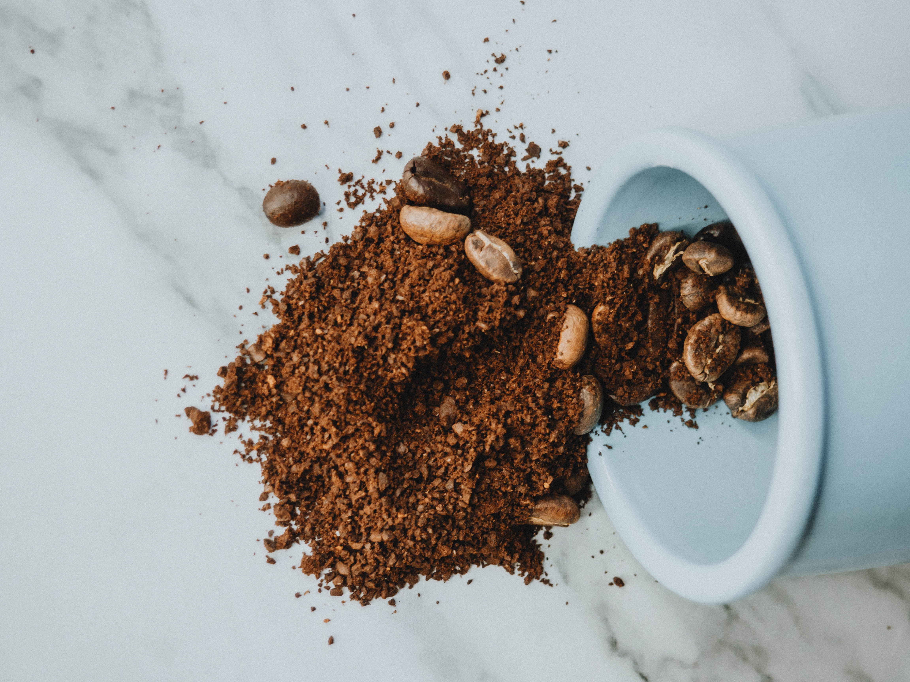

Design Challenge
What is the Design Challenge?
The Design Challenge comes from a study done by IDEO. Grasping a better understanding of the design challenge helps the problem at hand become actionable and achievable. To do so, we must first take a look at the goals of both the company and of the user.